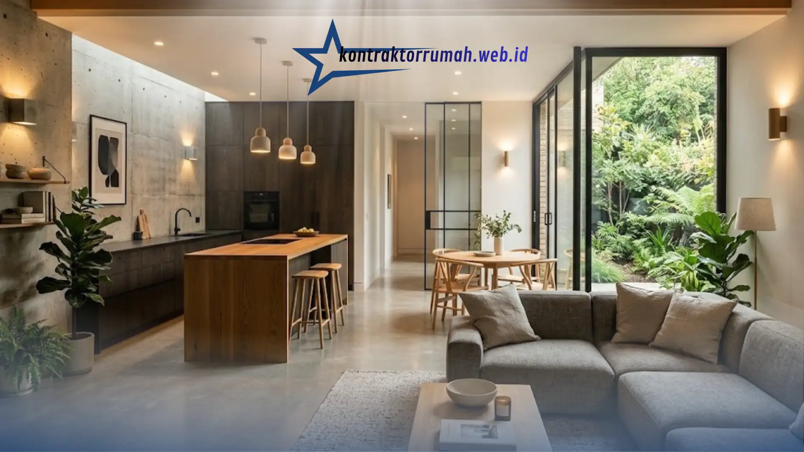

Rumah dengan desain interior modern minimalis konsep open space semakin diminati karena memberi kesan luas, terang, dan fleksibel meski luas bangunan terbatas. Konsep ini menggabungkan beberapa area fungsional seperti ruang tamu, ruang makan, dan dapur dalam satu ruang tanpa sekat masif, sehingga aliran udara dan cahaya menjadi lebih optimal.
Poin Penting
- Open space mengandalkan minim sekat dan garis desain yang bersih untuk memaksimalkan kesan luas.
- Pemilihan palet warna netral dan material alami menjadi kunci utama gaya minimalis.
- Pencahayaan alami dan buatan perlu direncanakan sejak tahap denah, bukan belakangan.
- Furnitur multifungsi membantu menjaga ruang tetap rapi dan tidak sesak.
- Zonasi ruang tetap dibutuhkan meski tanpa dinding pemisah fisik.
Apa Itu Desain Interior Rumah Modern Minimalis Open Space?
Desain ini adalah pendekatan penataan ruang yang mengutamakan efisiensi, garis bersih, dan keterhubungan antar-area dalam rumah. Berbeda dengan rumah konvensional yang memisahkan setiap ruangan dengan dinding permanen, konsep open space membiarkan beberapa fungsi ruang menyatu secara visual maupun fisik. Prinsip utamanya adalah "less is more" — setiap elemen yang ada di ruangan harus memiliki fungsi jelas, tanpa ornamen berlebihan.
Konsep ini cocok diterapkan pada rumah tipe kecil hingga menengah, terutama di kawasan perkotaan dengan lahan terbatas, karena mampu menciptakan ilusi ruang yang lebih lega dari ukuran sebenarnya.
Mengapa Konsep Open Space Semakin Diminati?
Beberapa alasan mengapa banyak pemilik rumah beralih ke konsep ini antara lain:
- Efisiensi lahan. Tanpa sekat masif, satu ruang bisa menampung beberapa fungsi sekaligus.
- Interaksi keluarga lebih mudah. Anggota keluarga di dapur, ruang makan, dan ruang tamu tetap bisa saling berkomunikasi.
- Sirkulasi udara dan cahaya lebih baik. Ruang terbuka memungkinkan udara dan cahaya alami masuk lebih merata.
- Fleksibilitas fungsi ruang. Tata letak dapat disesuaikan kembali di kemudian hari tanpa perlu bongkar dinding.
Bagaimana Merancang Tata Ruang Open Space yang Efektif?
Merancang tata ruang open space membutuhkan perencanaan denah yang matang sejak awal. Beberapa langkah yang umum dilakukan:
- Tentukan zona fungsional terlebih dahulu. Meski tanpa sekat, area duduk, makan, dan memasak tetap perlu dipisahkan secara visual, misalnya melalui perbedaan lantai, plafon, atau pencahayaan.
- Gunakan furnitur sebagai pembatas ruang. Sofa, rak buku rendah, atau meja bar dapat berfungsi sebagai pembatas alami antar-zona tanpa menutup pandangan.
- Perhatikan alur sirkulasi (traffic flow). Pastikan jalur antar-area tidak terhalang furnitur agar penghuni bisa bergerak leluasa.
- Sesuaikan skala furnitur dengan ukuran ruang. Furnitur yang terlalu besar akan membuat ruang terbuka justru terasa sempit.
Umumnya, dapur dan ruang makan digabung dalam satu garis pandang dengan ruang tamu, sementara area servis seperti kamar tidur dan kamar mandi tetap dipisahkan dengan dinding untuk menjaga privasi.
Pemilihan Warna dan Material yang Tepat
Palet warna menjadi salah satu elemen paling menentukan dalam gaya minimalis modern. Warna netral seperti putih, abu-abu, krem, dan cokelat muda umumnya dipilih sebagai warna dasar karena memberi kesan bersih dan lapang. Warna aksen bisa ditambahkan dalam jumlah terbatas melalui bantal, karpet, atau elemen dekoratif kecil agar ruang tidak terasa monoton.
Dari sisi material, gaya modern minimalis cenderung menggunakan:
- Kayu natural atau motif kayu untuk lantai dan beberapa elemen furnitur, memberi sentuhan hangat di tengah ruang yang didominasi warna netral.
- Beton ekspos atau semen aci sebagai elemen dinding aksen yang menonjolkan kesan industrial-modern.
- Kaca dan besi hollow untuk partisi ringan yang tetap menjaga transparansi ruang.
- Material anti-lembap dan mudah dibersihkan khususnya di area dapur yang menyatu dengan ruang lain.

Peran Pencahayaan dalam Konsep Open Space
Pencahayaan bukan sekadar penerangan, melainkan alat untuk menegaskan zonasi ruang tanpa dinding. Beberapa pendekatan yang umum diterapkan:
- Pencahayaan alami maksimal melalui jendela besar, skylight, atau bukaan ganda yang memungkinkan cahaya matahari masuk ke area tengah rumah.
- Lapisan pencahayaan buatan (layered lighting), terdiri dari general lighting untuk penerangan menyeluruh, task lighting untuk area kerja seperti dapur, dan accent lighting untuk menonjolkan elemen dekoratif.
- Pemilihan suhu warna lampu yang konsisten, umumnya warm white atau natural white, agar suasana ruang tetap menyatu meski berasal dari sumber cahaya berbeda.
Perencanaan titik lampu sebaiknya dilakukan bersamaan dengan perencanaan denah, bukan setelah dinding dan plafon selesai, agar posisi kabel dan titik lampu dapat menyesuaikan tata letak furnitur.
Furnitur Multifungsi untuk Ruang Terbatas
Pada rumah dengan konsep open space, pemilihan furnitur multifungsi membantu menjaga ruang tetap lega dan tidak sesak. Beberapa contoh yang umum digunakan antara lain meja makan lipat yang bisa diperluas saat menerima tamu, sofa bed untuk kebutuhan tidur tambahan, kabinet dapur dengan sistem penyimpanan vertikal, serta rak dinding yang menggantikan lemari besar berdiri.
Prinsip yang perlu diperhatikan adalah memilih furnitur dengan kaki ramping dan desain terbuka di bagian bawah, karena secara visual memberi kesan ruang lebih lapang dibanding furnitur bervolume besar dan tertutup rapat.
Kesalahan Umum yang Perlu Dihindari
Beberapa kesalahan yang sering terjadi saat menerapkan konsep open space antara lain terlalu banyak menempatkan furnitur sehingga ruang terasa penuh, tidak memperhitungkan sirkulasi asap dan bau dari dapur ke ruang lain, minim ventilasi tambahan seperti exhaust fan, serta pemilihan warna dan material yang terlalu beragam sehingga kesatuan visual ruang menjadi hilang. Kesalahan lain yang cukup umum adalah mengabaikan kebutuhan penyimpanan sejak awal, sehingga barang menumpuk di permukaan meja dan mengurangi kesan rapi yang menjadi ciri khas gaya minimalis.
Tips Praktis Menerapkan Konsep Open Space
Beberapa tips yang dapat diterapkan langsung antara lain menggunakan cermin besar untuk memantulkan cahaya dan memperluas kesan ruang secara visual, memilih plafon dengan ketinggian berbeda untuk menandai batas zona tanpa dinding, menambahkan tanaman indoor sebagai elemen pemisah alami sekaligus penyegar udara, serta konsisten menggunakan satu jenis material lantai di seluruh area open space agar ruang terasa menyatu.
Bagi Anda yang berencana merenovasi atau membangun rumah dengan konsep ini, langkah selanjutnya yang tidak kalah penting adalah menyusun estimasi biaya secara rinci dan memastikan pelaksana konstruksi memiliki kompetensi yang sesuai.
Desain interior rumah modern minimalis konsep open space mengandalkan perencanaan tata ruang yang matang, pemilihan warna dan material netral, pencahayaan berlapis, serta furnitur multifungsi. Zonasi ruang tetap penting meski tanpa sekat fisik, dan kesalahan seperti penempatan furnitur berlebihan atau minim ventilasi sebaiknya dihindari sejak tahap perencanaan. Dengan pendekatan yang tepat, rumah berukuran terbatas pun dapat terasa lebih luas, terang, dan nyaman untuk aktivitas sehari-hari.